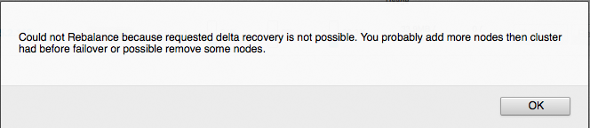
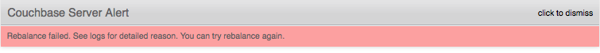

Delta node recovery
Delta node recovery permits nodes to be re-added to the cluster and incrementally caught up with the data changes.
Delta node recovery permits a failed over node to be recovered by re-using the data on its disk and then resynchronizing the data based on the delta change. The failed over node is checked to identify the point when data mutations stopped and resynchronized beginning at that point. The server node catches up on data mutations for its vBuckets and starts serving data. Because the original data and data buckets are retained, the cluster starts functioning with minimal downtime. This operation improves recovery time and network resource usage.
Server nodes are removed from clusters under many circumstances. The following are circumstances (among many others) where a server node might be re-added to the cluster after being failed over.
- Node goes down for a short period of time
- Routine maintenance is scheduled
- Network connectivity is briefly disrupted
When a node is failed over, data files are preserved. The data files are used either for Couchbase support, data recovery, or delta node recovery.
In the process of failing over a node, performing maintenance, adding the node back into the cluster, and rebalancing, data is recovered via either full recovery mode or delta recovery mode. With delta recovery mode, Couchbase detects (with the Database Change Protocol) which data files are up-to-date and which are out-of-date and then, during rebalance, the existing data files on the failed over server node are retained and the out-of-date files are updated.
From the web console, the Delta Recovery and Full Recovery options display after the server node is failed over. Both recovery methods add the server node back into the cluster during the rebalance operation, however, full recovery removes the node's data prior to the rebalance and delta recovery schedules the node's existing data to be re-used.
Delta recovery requirements:
- A healthy server node and a healthy state for the cluster.
- The server node is failed over. Delta recovery is not possible for a rebalance-in operation (add server) or rebalance-out operation (remove server).
- Delta recovery must be possible for all buckets. For example, if delta recovery is possible for a subset of buckets but not possible for another subset of buckets, then the Couchbase cluster does not permit a rebalance operation.
- Because delta recovery relies on the existing data files on the failed over server node's disk, the exact same set of buckets must be transferred to the failed over server node.
Delta recovery characteristics:
- Data files are "warmed up" into memory. Warmed up into memory means that data is loaded into memory. As a minimum, depending on whether metadata is retained in or not, all data file keys are loaded from disk prior to the rebalance operation.
- Indexes must be rebuilt on the server node that is being re-added.
- Use in deployments where data size is much greater than RAM size, bucket eviction is set to full eviction (metadata is not retained in memory), and indexes are not defined.
Delta node recovery failure scenarios
The following are conditions where delta node recovery either defaults to full recovery or is not available:
- If topology changes occur while a node is pending delta recovery, delta node recovery is impacted. For example, another node is added, a node is removed, or a node is swapped.
- If a down node is hard failed over and is marked for removal.
- If rebalance-in-out operations are performed where the number of in and out nodes do not match (swap rebalance works in this case).
- If certain bucket operations are performed while a node is pending delta recovery, delta node recovery is impacted. For example, a new bucket is added, a bucket's replica configuration is changed, or a bucket is flushed.
The following describes scenarios where delta node recovery either defaults to full recovery or is not available.
Node 1 is in delta recovery and Node 2, an active server node, crashes.
- Node 1 is failed over and delta recovery is specified. Now, Node 1 is pending delta recovery.
- Node 2, an active server, goes down. Note: The rebalance operation is not available.
- Fail over Node 2.
- Cancel the pending delta recovery, specify full recovery, and rebalance.
- Repair Node 2, add the server to the cluster, and rebalance.
Node 1 is in delta recovery and Node 1 crashes during rebalance.
- Node 1 is failed over, delta recovery is specified, and the rebalance operation is started.
- Node 1 crashes and the rebalance operation fails.
- Repair Node 1, re-start the server node, and rebalance. Node1 is added back to the cluster using full recovery.
Node 1 is in delta recovery and a bucket operation is performed.
The bucket operations that cause rebalance to fail are adding bucket, changing replica configuration, or flushing bucket
- Node 1 is failed over, delta recovery is specified, and then a bucket operation is performed.
- Rebalance is performed and fails.

- Cancel the pending delta recovery, specify full recovery, and rebalance.
Node 1 and Node 2 are in delta node recovery and Node 2 crashes.
- Both Node 1 and Node 2 are failed over, delta recovery is specified.
- Node 2 crashes.
- Rebalance is performed and fails.
